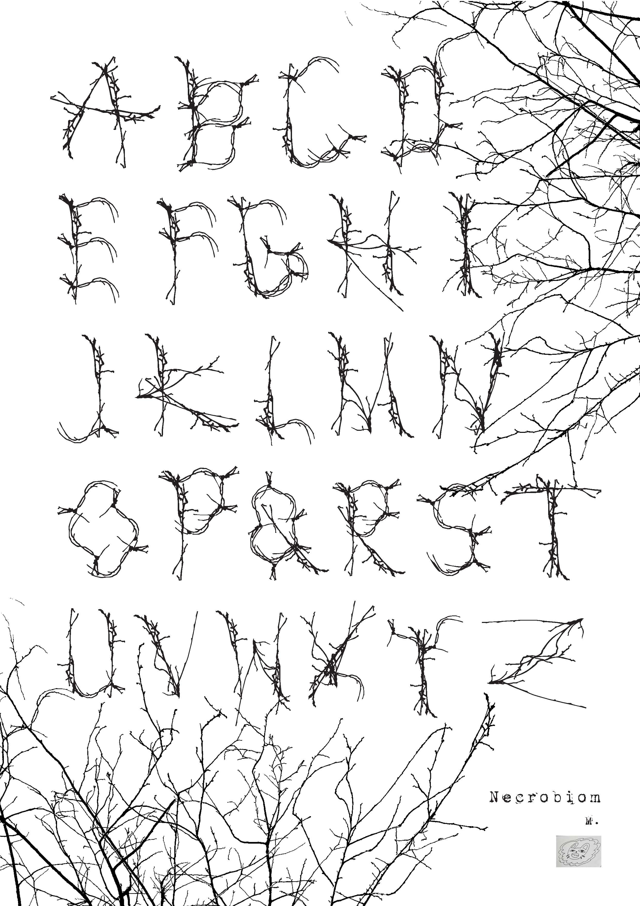
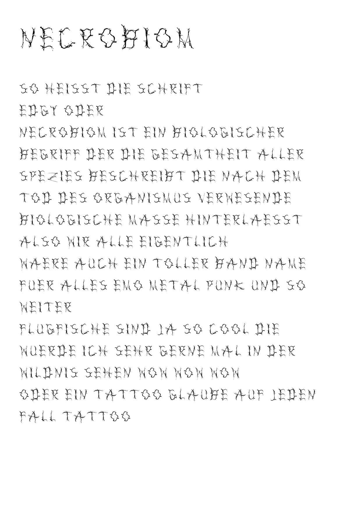
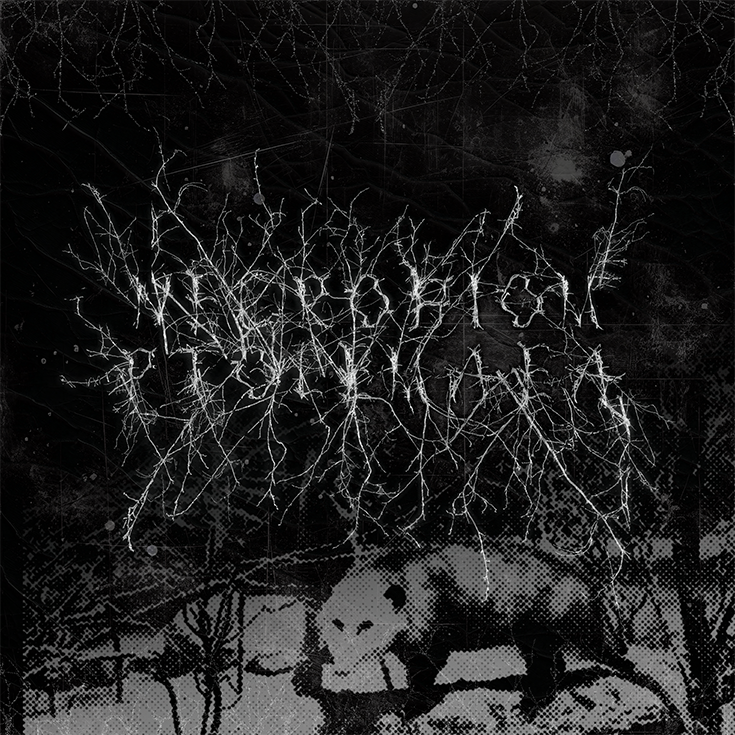

Für die Aufgabe Grids + Modules arbeiteten wir wieder erst analog. Finde den Ansatz sehr super, statt direkt am Laptop zu starten ohne so richtig nachvollziehen zu können, eigentlich hinter vielen Prozessen so abgeht. So arbeiteten wir erst mit Schablonen und begrenzten Formen, mit denen wir zeichnerisch Schriften zusammenbauten.
Ich habe vor meiner Schrift aus den Ästen erst etwas anderes probiert, was aber dann nicht gut geklappt hat. Denn eine Aufgabe darunter war, ein Foto von einem Raster aus unserer Umwelt zu machen und das dann in eine Schrift umzusetzen. Ich hatte erst ein Foto von den Löchern im Baugerüst, was ich mir perfekt als Raster vorstellte. Diese fing ich zwar an zu machen, fand aber dann für mich keinen richtig guten Weg für die Umsetzung. Dann begann ich aber,
ein Foto von Ästen in AdobeIllustrator zuerst zu vektorisieren und dann zwei Ast-Elemente mir rauszusuchen. Ich benutzte dann nur die zwei Bausteine, um alle Buchstaben aufzubauen, was erstaunlich gut für die Einheitlichkeit war. Da ich (scheinbar) komplett unleserliche Metalband-Schriften ganz toll finde, war das auch meine Inspiration für meine eigene Schrift.


